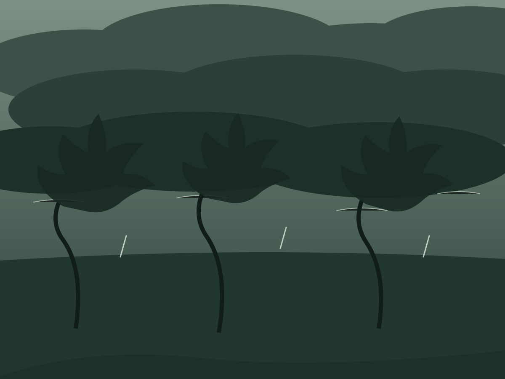
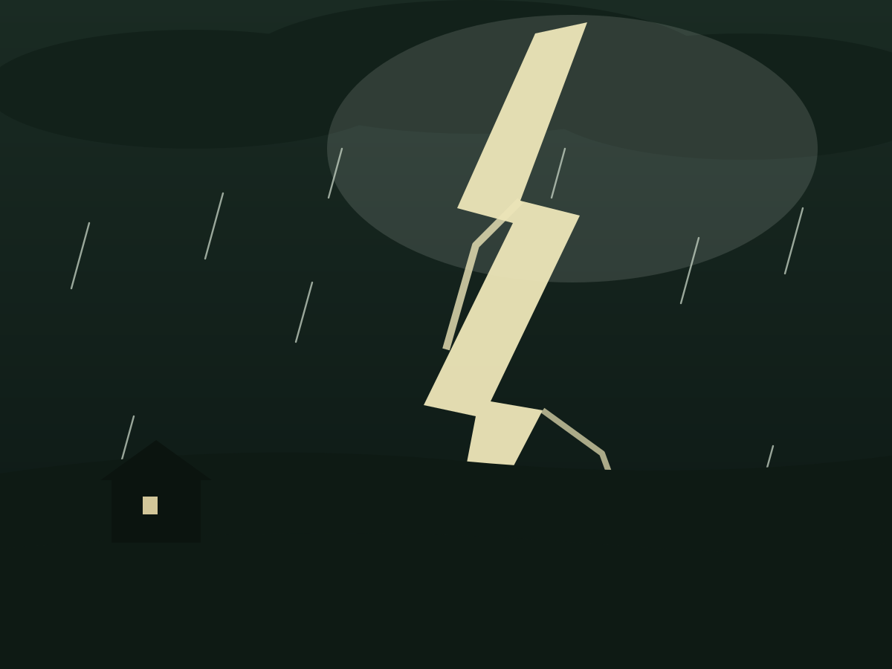

壹 · 预感
山雨欲来
「闷热的夜，令人窒息，我辗转不寐。」
暴风雨到来之前，天地先安静下来。云一层层压低，颜色从灰绿沉成墨色；风还在试探，树梢已经把方向交了出去。
万物都在等。这种等，像大幕拉开前的黑暗——你分明听得见，有什么巨大的东西正朝这里走来。
01

风雨手记 — 云低风急贰 · 倾泻
雷霆万钧
「窗外，一道道闪电划破漆黑的夜幕。」
然后，天幕裂开了。闪电把黑夜劈成一瞬的白昼，雷声紧跟着碾过屋顶，大雨倾盆而下，天地间只剩水的轰鸣。
这一刻没有旁观者。草木在雨里俯身，屋舍在雷声里屏息——暴烈，也是大自然说话的方式。
02

风雨手记 — 天幕裂开叁 · 天青
雨霁天青
雨说停就停。云层从边上裂开一道缝，天光斜斜地漏下来，湿透的大地泛起银亮的水光，空气干净得像刚诞生。
经历了一整场暴烈之后，世界反而温柔了。或许这正是那场大雨想说的话：倾泻，是为了澄清；风暴的尽头，总是天青。
03风雨手记 — 雨过天青